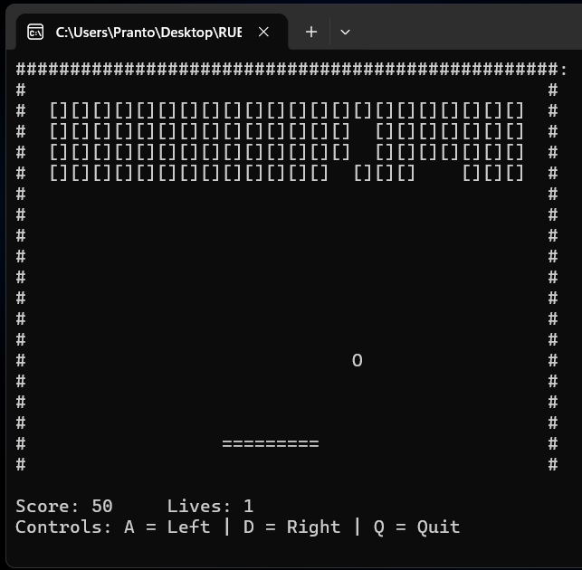
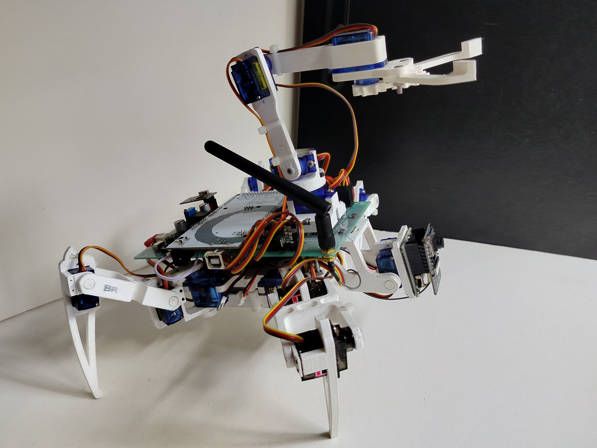
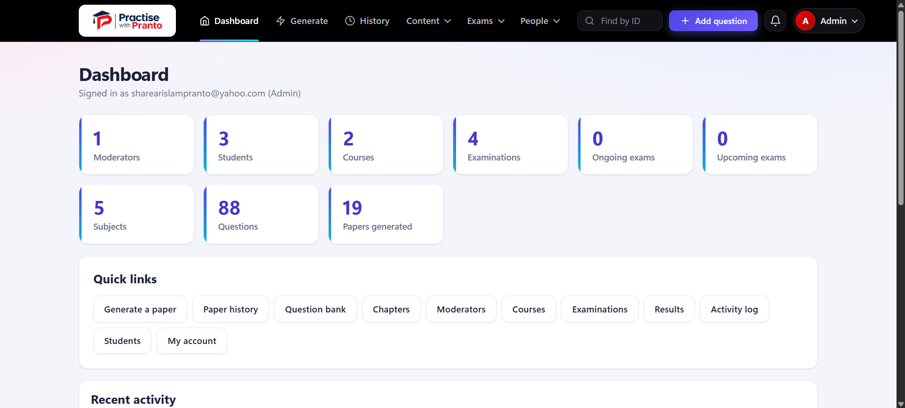

DX Ball is a classic arcade-style game developed using C++. The player controls a paddle to bounce a ball and break bricks without allowing the ball to fall. The game includes paddle movement, ball collision detection, scoring, and multiple levels. This project helped me understand game development, object movement, and collision detection using C++.
Technologies used:

This project focuses on designing and developing a multi-functional quadruped robot with a robotic arm, wireless control, and live video monitoring. The robot can move on different surfaces and perform pick-and-place operations using its robotic arm.
Technologies used:

An educational web application designed to help students improve their academic performance and prepare for examinations through MCQ-based practice tests. Students can practise questions from different subjects and chapters, evaluate their knowledge, track their progress, and identify areas where they need improvement. The platform aims to make learning and exam preparation easier, more effective, and accessible.
Technologies used: